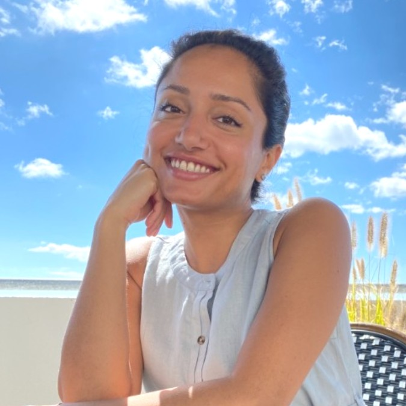

Research · Strategy · Systems
I work at the intersection of user-centered research and digital experience design — helping organizations de-risk the decisions that matter most.

New YorkAbout
My practice is rooted in design research & strategy, participatory design, and systems thinking. Grounded in getting close to real human experience — then building the frameworks that help institutions act on what they learn.
I'm drawn to ambiguous, high-stakes problems: the kind that sit at the edge of what an organization knows how to do — and helping them de-risk the decisions that matter most.
Philosophy
"The goal isn't just better research. It's creating the conditions for insight to drive action."